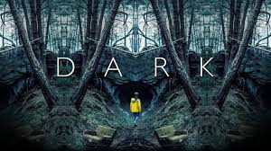

Suits (Homens de Terno ou Defesa à Medida (pt-PT)) é uma série de televisão de drama legal americano, criada e escrita por Aaron Korsh. A série estreou em 23 de junho de 2011, no canal USA Network, onde é exibida atualmente. Suits se passa em um escritório de advocacia fictício na cidade de Nova Iorque. A série acompaha os personagens Mike Ross, interpretado por Patrick J. Adams, e Harvey Specter, interpretado por Gabriel Macht.
Enredo
A série é rodada em torno de casos jurídicos sempre bem resolvidos, e com um toque de humor sarcástico, tudo isso dentro do escritório de advocacia "Pearson Hardman". Michael "Mike" Ross (Patrick J. Adams) é um garoto que foi expulso do colégio, mas com uma brilhante memória que lhe permitiu excelentes notas na prova de admissão em cursos de Direito, sem nunca ter obtido o diploma por não poder entrar em nenhuma faculdade. Harvey Specter (Gabriel Macht), um dos melhores advogados de Manhattan, oferece-lhe emprego na capacidade de advogado associado depois de o pôr à prova. Devido à política da firma de aceitar apenas ex-alunos da Escola de Direito de Harvard, ambos mentem que Mike é um graduado que frequentou Harvard. Ao contrário do veterano Harvey, Ross cria vínculos com seus clientes. Harvey, com seu jeito frio, evita contato com Mike em assuntos que não sejam sobre trabalho. Mas no decorrer da série eles criam um forte vínculo de amizade um com outro, o que faz de Mike Ross o pupilo de Harvey, que ensina ao novato todos os truques sobre o ramo jurídico.
Episódios
Temporada
Episódios
Data de lançamento
1
12
23 de Junho de 2011
2
16
14 de Junho de 2012
3
16
16 de Julho de 2013
4
16
11 de Junho de 2014
5
16
24 de Junho de 2015
6
16
13 de Julho de 2016
7
16
12 de Julho de 2017
8
16
18 de Julho de 2018
9
10
17 de Julho de 2019
Produção
Suits pela primeira vez na lista de desenvolvimento da USA Network sob o título A Legal Mind em abril de 2010. Em 5 de abril de 2010, os EUA anunciaram que estavam desenvolvendo sete novos pilotos para a temporada de televisão de 2010–2011, incluindo A Legal Mind, que mais tarde se tornaria Suits. A estréia foi escrita por Aaron Korsh, e David Bartis e Gene Klein atuaram como produtores executivos.
Logotipo da série de TV 'Suits'
Tudo sobre Dark
Dark (estilizado como D A R K ou D A Я K) é uma aclamada e premiada série alemã de drama, suspense e ficção científica criada por Baran bo Odar e Jantje Friese e eleita em votação popular no site Rotten Tomatoes como a melhor série original Netflix.
Visão geral
O desaparecimento recente de crianças na pequena cidade alemã de Winden remete a acontecimentos idênticos ocorridos há 33 anos e 66 anos e coloca quatro famílias no centro de uma teia de mistérios envolvendo uma misteriosa caverna, uma usina nuclear suspeita e um estranho homem recém-chegado na cidade.
Episódios
Temporada
Episódios
Data de lançamento
1
10
1 de Dezembro de 2017
2
8
21 de Junho de 2019
3
8
27 de Junho de 2020
Produção
Em fevereiro de 2016, a Netflix deu sinal verde para a série e encomendou uma primeira temporada composta por 10 episódios de uma hora. As filmagens começaram em 4 de outubro de 2016 nos arredores de Berlim e duraram até o final de março de 2017. A série foi filmada na resolução 4K (Ultra HD). Sua primeira temporada completa, com dez episódios, foi disponibilizada no dia 1º de dezembro de 2017.

Logotipo da série de TV 'Dark'
Tudo sobre Peaky Blinders
Peaky Blinders é uma série de televisão britânica de drama criada por Steven Knight. Situado em Birmingham, na Inglaterra, segue as façanhas da gangue criminosa Peaky Blinders logo após a Primeira Guerra Mundial. A gangue fictícia é vagamente baseada em uma gangue urbana de jovens reais de mesmo nome que esteve ativa na cidade de 1890 a 1910.
Enredo
Os Peaky Blinders são uma organização criminosa de origem cigana que se passa na cidade de Birmingham, Inglaterra, em 1919, formada vários meses após o final da Primeira Guerra Mundial (1914–1918). A história é centrada na ambição do líder da gangue inglesa, Thomas "Tommy" Shelby (Cillian Murphy). A gangue chama a atenção do major irlandês, Chester Campbell (Sam Neill), um inspetor-chefe de polícia do Royal Irish Constabulary (RIC) de Belfast, Irlanda do Norte, enviado por Winston Churchill, sendo contratado para limpar a cidade do Exército Republicano Irlandês (IRA) (1919–1922), comunistas, gangues e criminosos comuns. Churchill ordenou Campbell eliminar as desordens e rebeliões em Birmingham, visando recuperar um esconderijo roubado de armas que deveria ser enviado para a Líbia Italiana (1934–1943).
Episódios
Temporada
Episódios
Data de lançamento
Emissora
Audiência (em milhões)
1
6
12 de Setembro de 2013
BBC Two
2.38
2
6
2 de Outubro de 2014
BBC Two
2.18
3
6
5 de Maio de 2016
BBC Two
2.85
4
6
15 de Novembro de 2017
BBC Two
4.05
5
6
25 de Agosto de 2019
BBC One
7.20
6
6
27 de Fevereiro de 2022
BBC One
ASA
Produção
Peaky Blinders foi criado por Steven Knight, e na primeira temporada dirigido por Otto Bathurst e produzido por Katie Swinden. Os escritores são listados como Steven Knight, Stephen Russell e Toby Finlay.